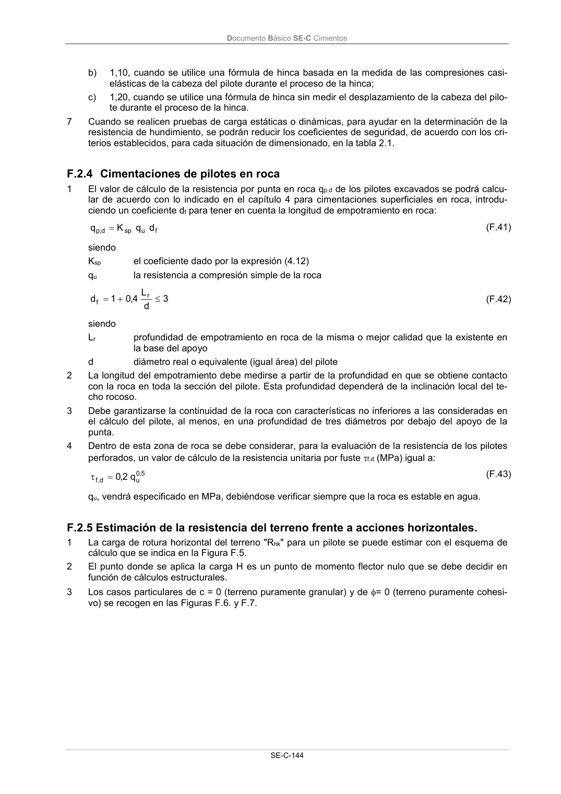

DB-SE-C Cimientos · edición 2019-12-20 · capa oficial
Documento DB-SE-C-oficial · SHA-256 del PDF a71133f4b0dca253e45ea3071c70f2a512354bcc5cd841bf89b1a502f567ac5e
Página física 149 de 165.
Copia fiel del PDF fuente · Fuente oficial
Ficha de la disposición en la fuente oficial
Formato: Texto de la página (Markdown)
Documento Básico SE-C Cimientos SE-C-144 b) 1,10, cuando se utilice una fórmula de hinca basada en la medida de las compresiones casi- elásticas de la cabeza del pilote durante el proceso de la hinca; c) 1,20, cuando se utilice una fórmula de hinca sin medir el desplazamiento de la cabeza del pilo- te durante el proceso de la hinca. 7 Cuando se realicen pruebas de carga estáticas o dinámicas, para ayudar en la determinación de la resistencia de hundimiento, se podrán reducir los coeficientes de seguridad, de acuerdo con los cri- terios establecidos, para cada situación de dimensionado, en la tabla 2.1. F.2.4 Cimentaciones de pilotes en roca 1 El valor de cálculo de la resistencia por punta en roca qp,d de los pilotes excavados se podrá calcu- lar de acuerdo con lo indicado en el capítulo 4 para cimentaciones superficiales en roca, introdu- ciendo un coeficiente df para tener en cuenta la longitud de empotramiento en roca: f u sp d , p d q K q (F.41) siendo Ksp el coeficiente dado por la expresión (4.12) qu la resistencia a compresión simple de la roca 3 d L 4,0 1 d r f (F.42) siendo Lr profundidad de empotramiento en roca de la misma o mejor calidad que la existente en la base del apoyo d diámetro real o equivalente (igual área) del pilote 2 La longitud del empotramiento debe medirse a partir de la profundidad en que se obtiene contacto con la roca en toda la sección del pilote. Esta profundidad dependerá de la inclinación local del te- cho rocoso. 3 Debe garantizarse la continuidad de la roca con características no inferiores a las consideradas en el cálculo del pilote, al menos, en una profundidad de tres diámetros por debajo del apoyo de la punta. 4 Dentro de esta zona de roca se debe considerar, para la evaluación de la resistencia de los pilotes perforados, un valor de cálculo de la resistencia unitaria por fuste f,d (MPa) igual a: 5 , 0 u d ,f q 2,0 (F.43) qu, vendrá especificado en MPa, debiéndose verificar siempre que la roca es estable en agua. F.2.5 Estimación de la resistencia del terreno frente a acciones horizontales. 1 La carga de rotura horizontal del terreno "Rhk" para un pilote se puede estimar con el esquema de cálculo que se indica en la Figura F.5. 2 El punto donde se aplica la carga H es un punto de momento flector nulo que se debe decidir en función de cálculos estructurales. 3 Los casos particulares de c = 0 (terreno puramente granular) y de = 0 (terreno puramente cohesi- vo) se recogen en las Figuras F.6. y F.7.
